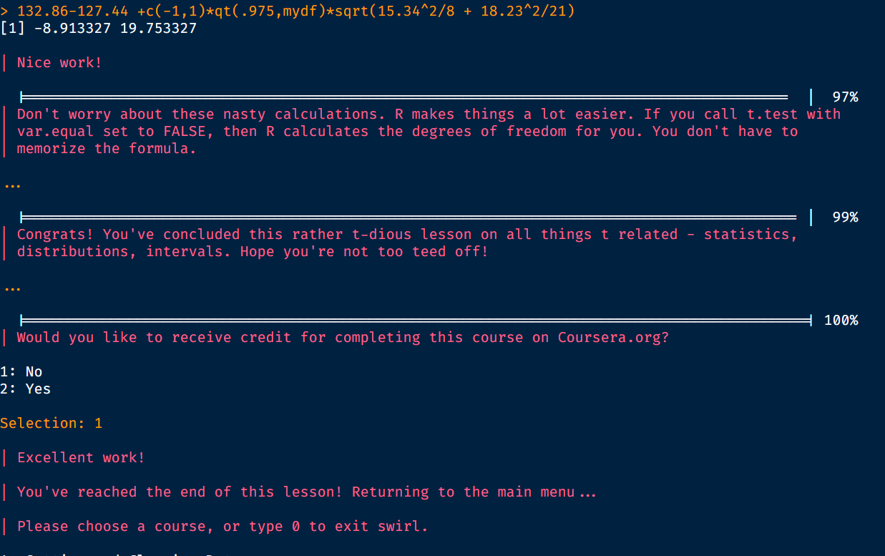

Introduction to Statistical Computing - dplyr
ü뮂Äçüíª Eugene Hickey @ Atlantic Technological University ü뮂Äçüíª
- eugene.hickey@tudublin.ie
- @eugene100hickey
- github.com/eugene100hickey
- www.fizzics.ie
Week Four - Statistical Inference
Time we did some statistics on our data
This ties in nicely with John’s half of our course
We’ll look at this from three perspectives
distributions
confidence intervals
hypothesis tests
Distributions
There are lots of these, but we’ll mention five (and describe two)
binomial (discrete)
poisson
normal (continuous)
Student’s t distribution
exponential
Binomial Distribution
number of successes in a sequence of trials
three parameters
the number of trials, n
the number of successes, k
the probability of success in a single trial, p
\[ {\displaystyle f(k,n,p)=\Pr(k;n,p)=\Pr(X=k)={\binom {n}{k}}p^{k}(1-p)^{n-k}}\]
- for k = 0, 1, 2, …, n, where
\[ {\displaystyle {\binom {n}{k}}={\frac {n!}{k!(n-k)!}}} \]
What this looks like:
A rocket launch has a probability of success of 85%. From a 100 launches, what is the profile of the number of successes?

How this works in R
- number if successes (k) called x
- number of trials (n) called size
- probability (p) called prob
dbinom(), pbinom(), qbinom(), and rbinom()
dbinom()calculates the probability of a specific outcome valuepbinom()calculates the sum of probabilities less than (or greater than), an outcome valuethis is the cumulative probability
adds up a whole bunch of
dbinom()’s
qbinom()calculates the number of successes below which there is a certain probabilitylike the inverse function of
pbinom()give it a probability and it works out the number of successes threshold
q stands for quantile
rbinom()generates random numbers of successs from a binomial distribution
pbinom()
lower.tail = TRUEmeans k successes or less (successes \(\le\) threshold, k)lower.tail = FALSEmeans more than k successes (successes \(>\) threshold, k)worth remembering when to use
lower.tail = TRUE/FALSE
Example
- Family of eight children, chance of getting at least 7 girls
- Note we had to use k - 1 = 6 in
pbinom()calculation
qbinom()
in families of eight children, 30% of them have X girls or less. What is X?
qbinom(p = 0.3, size = 8, prob = 0.5, lower.tail = TRUE)gives X = 3
pbinom() versus qbinom()
pbinom()gives the probability of observing at least k successes- it returns a probability
qbinom()gives the number of successes that would be observed with p probabilityit returns a number of successes
gives us the positon of some quantile
rbinom()
this gives a random number from the distribution
take a sample of 100 rocket launches, then for this sample 81 will be successful
command is
rbinom(n = 1, size=100, prob =0.85)n = 1means just one sample
Normal Distribution
spread in values of a continuous variable
two parameters
the mean value, \(\mu\)
the standard deviation, \(\sigma\)
\[ {\displaystyle f(x)={\frac {1}{\sigma {\sqrt {2\pi }}}}e^{-{\frac {1}{2}}\left({\frac {x-\mu }{\sigma }}\right)^{2}}} \]
\(\mu\) is the mean
\(\sigma\) is the standard deviation
What this looks like:
A human liver has an average mass of 0.85kg with a standard deviation of 0.2kg.
How this works in R
dnorm(), pnorm(), qnorm(), and rnorm()
dnorm()calculates the relative probability of a specific outcome valuepnorm()calculates the sum of probabilities less than (or greater than), an outcome valuethis is the cumulative probability
adds up a whole bunch of
dnorm()’s
qnorm()calculates the value below which there is a certain probabilitylike the inverse function of
pnorm()give it a probability and it works out the value
rnorm()generates random value from the normal distribution
pnorm()

lower.tail = TRUEmeans values less thanlower.tail = FALSEmeans values more thanbecause this is a continuous distribution we never have to worry about the pesky -1
Examples
The concentration of \(PM_{2.5}\) in air has an average value of 12 \(\mu g/m^{3}\) with a standard deviation of 5 \(\mu g/m^{3}\). What is the probability that a given day will exceed the recommended 25\(\mu g/m^{3}\)?
pnorm(q = 25, mean =12, sd =5, lower.tail = FALSE)gives 0.47%
Using the values above, what is the highest value of \(PM_{2.5}\) we can expect to see once a year?
qnorm(p = 1/365.25, mean =12, sd =5, lower.tail = FALSE)gives 25.9\(\mu g/m^{3}\)
rnorm()
this gives a random number from the normal distribution
a random sample of one person’s liver mass
command is
rnorm(n = 1, mean = 1.5, sd = 0.2)n = 1means just one sample
Confidence Intervals
we rarely know population statistics about our data
more common to have to infer them from sample statistics
if we don’t know the real standard deviation
estimate it from the sample
replace the normal distribution by its little cousin, the t-distribution
t-distribution is more spread out (more uncertain) than the normal
as sample size gets bigger the t converges to the normal
Confidence Intervals
imagine taking a bunch of different samples from a population
each one will have a slightly different mean
for one sample, its mean is our best guess as to the true population mean
but also need to express our degree of certainty (or otherwise) in this guess
this gives the confidence interval
Confidence Interval Imagined

Confidence Intervals in R
function
t.test()is handy for confidence interval calculationin fact it’s a bit of a Swiss army knife of conf. int., hypothesis testing….
give it a set of values and it’ll output the confidence interval for their mean
t.test(airquality$Wind)t.test(airquality$Wind)$conf.int
One Sample t-test
data: airquality$Wind
t = 34.961, df = 152, p-value < 2.2e-16
alternative hypothesis: true mean is not equal to 0
95 percent confidence interval:
9.394804 10.520229
sample estimates:
mean of x
9.957516 Hypothesis Testing
do two samples have difference means?
consider
gapminderdataset- was life expectancy in 2007 higher in Southern Europe than Northern Europe?
z <- dslabs::gapminder |>
filter(year == 2007, region %in% c("Northern Europe", "Southern Europe"))
t.test(life_expectancy ~ region, data = z)
Welch Two Sample t-test
data: life_expectancy by region
t = -0.10871, df = 14.573, p-value = 0.9149
alternative hypothesis: true difference in means between group Northern Europe and group Southern Europe is not equal to 0
95 percent confidence interval:
-3.374106 3.047439
sample estimates:
mean in group Northern Europe mean in group Southern Europe
77.67000 77.83333 Paired T-tests
Ten mice were placed on a high fat diet. Their weights were recorded before and afterwards. Is there a significant weight gain?
| mouse | before | after |
|---|---|---|
| 1 | 211.6 | 223.7 |
| 2 | 119.9 | 130.3 |
| 3 | 227.2 | 244.7 |
| 4 | 191.6 | 207.8 |
| 5 | 267.4 | 274.6 |
| 6 | 248.5 | 251.4 |
| 7 | 106.2 | 113.4 |
| 8 | 200.8 | 204.6 |
| 9 | 195.8 | 207.9 |
| 10 | 173.3 | 179.4 |
Graphically
With Paired t-test
Welch Two Sample t-test
data: weight by group
t = -0.41789, df = 18, p-value = 0.681
alternative hypothesis: true difference in means between group before and group after is not equal to 0
95 percent confidence interval:
-57.56225 38.46225
sample estimates:
mean in group before mean in group after
194.23 203.78 Workshop - Week Four
Perform the Following Tasks:
These are largely based on the lterdatasampler package
remotes::install_github("lter/lterdatasampler")
Human gestation has an average period of 266 days with a standard deviation of 16 days. What is the probability that a baby will arrive exactly on their due date? Assume normal distribution.
Make a 95% confidence interval for animal weight for the bisons recorded in the
knz_bisondataset.Perform a hypothesis test that female and male bisons are the same weight.
Assignments - Week Four
Complete week four moodle quiz
Complete
swirl()exercises
install.packages("swirl")library(swirl)install_course("Statistical Inference")swirl()choose course Statistical Inference
do the four exercises 1 (Introduction), 7 (CommonDistros), 9 (T Confidence Intervals), and 10 (Hypothesis Testing)
email a screen shot of the end of each lesson to eugene.hickey@associate.atu.ie
it’ll look a bit like screen capture here
